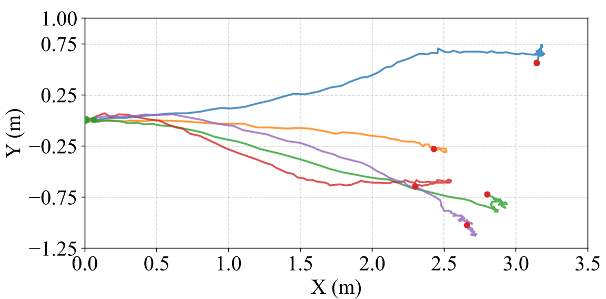
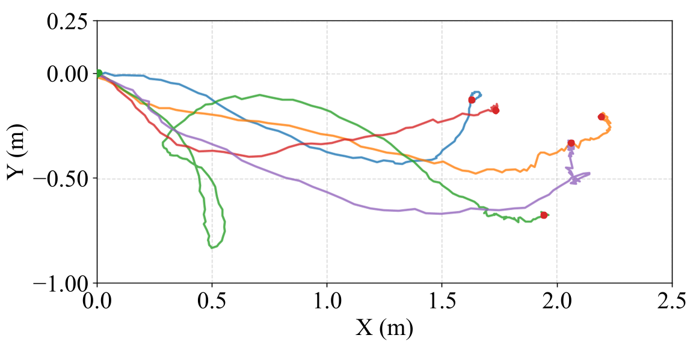
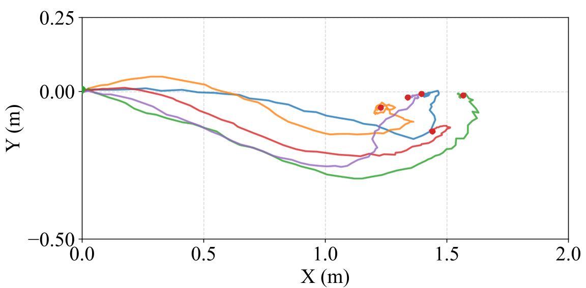

Flat-ground Positioning Task
In this experiment, a fixed target is established 1.5 meters directly ahead of the robot’s initial position. The performance of the three algorithms is demonstrated in the supplementary video.
This experiment focuses on aleatoric uncertainty introduced by asymmetric friction and dynamic payload dis- turbances. Specifically, a central symmetric pair of the robot’s feet is wrapped with Teflon (PTFE) tape to create near-zero friction contacts, while the other pair is covered with electrical insulating tape for moderate friction. Furthermore, a half- filled 0.8 kg water bottle is asymmetrically mounted to the left side of the robot chassis, introducing unmodeled, time- varying center-of-mass (CoM) oscillations during locomotion

Fig. 2: Hardware deployment and time-lapse snapshots of the flat-ground positioning task.
Locomotion under Coupled Disturbances: Demonstrating the low-level locomotion performance against asymmetric low-friction surfaces (Teflon and tape) and dynamic CoM oscillations induced by a liquid payload.
Nominal HRL: The nominal baseline, however, fails to decelerate until it approaches the target, resulting in severe slipping; consequently, its sustained high-velocity commands induce unsafe behavior.
Reward-penalized HRL: although the reward-penalized HRL baseline is trained with locomotion-aware capabilities in simulation, it exhibits unstable rotational behavior during real-world deployment.
Reward-penalized HRL: the baseline still struggles with severe OOD challenges, such as navigating near-zero friction Teflon surfaces and coping with payload-induced center-of-mass (CoM) oscillations. Ultimately, these factors yield a refined yet fundamentally limited performance.
Proposed EF-HRL: regulated by the adaptive safety factor, the EF-HRL maintains a conservative velocity to prevent slipping and initiates deceleration earlier than the baseline algorithms, thereby achieving a 100% success rate in the positioning task.

Fig. 3: Nominal HRL Trajectories (5 trials): Note the large deviations caused by late deceleration.

Fig. 4: Reward-penalized HRL Trajectories (5 trials): Note the improved stability and reduced deviations, while exhibiting unstable rotational behavior.

Fig. 5: Proposed EF-HRL Trajectories (5 trials): Note the enhanced safety and reduced deviations.